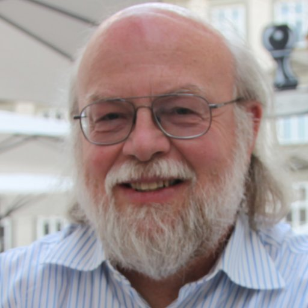

James Gosling, OC (19 de mayo de 1955 cerca de Calgary, Alberta, Canadá) es un famoso científico de la computación conocido como el padre del lenguaje de programación Java.
En 1977, Gosling se licenció en ciencias de la computación por la Universidad de Calgary. En 1983, se doctoró por la Universidad Carnegie Mellon, su tesis doctoral se tituló La manipulación algebraica de las limitaciones. Su director de tesis fue Raj Reddy. Mientras trabajaba para su doctorado, escribió una versión de Emacs (Gosling Emacs), y antes de unirse a Sun Microsystems, construyó una versión multi-procesador de Unix, así como varios compiladores y sistemas de correo.
Desde 1984 James Gosling ha trabajado en la compañía estadounidense Sun Microsystems donde fue vicepresidente hasta que esta fue comprada por Oracle. Abandonó esta compañía el 2 de abril de 2010. En cuanto a por qué se fue, Gosling escribió en su blog: Casi cualquier cosa que pudiera decir es honesta y haría más daño que bien. Posteriormente, empezó a trabajar en Google el 28 de marzo de 2011, anunciándolo en una entrada en su blog.1 Actualmente es Jefe de Arquitectura de Software en Liquid Robotics.23
Gosling es reconocido como el creador del lenguaje de programación Java. Realizó el diseño original y la implementación del compilador original y la máquina virtual Java, por lo que fue elegido miembro de la Academia Nacional de Ingeniería de Estados Unidos (NAE). Además, Gosling ha contribuido con otros proyectos de software como NeWS y Gosling Emacs.
En el 2015 recibió la medalla John von Neumann de la IEEE por sus contribuciones al desarrollo informático
